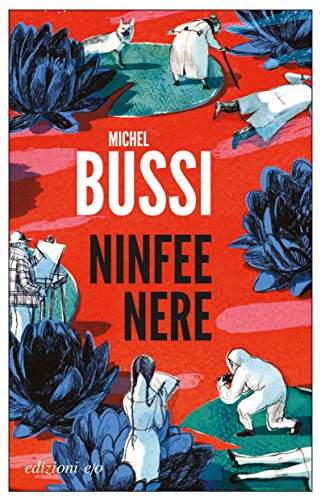

Autore: Michel Bussi
Editore: E/O
Pagine: 512
Genere:Thriller
Anno edizione: 2016
Dopo il successo di “Ninfee nere”, l’attesa per il nuovo romanzo di Michel Bussi era molto alta, e “Tempo assassino” ha ripagato l’attesa.
Il primo approccio che si ha con il libro è fantastico, perché quando si ha in mano un racconto con una copertina del genere, la voglia di leggerlo si moltiplica all’ennesima potenza.
È la stessa sensazione provata con “Ninfee nere”: le copertine degli scritti di Michel Bussi hanno una marcia in più.
Clotilde è l’unica sopravvissuta della sua famiglia ad un incidente stradale avuto nel 1989 in Corsica.
Madre, padre e fratello son morti sul colpo, ma lei è stata tratta in salvo. Ventisette anni dopo ritorna in vacanza in Corsica, paese natale del padre morto, insieme a suo marito Frank e sua figlia Valentine, e soggiorna nello stesso camping in cui alloggiava nella sua infanzia, prima del tragico incidente.
Mentre Clotilde rivive il passato tra le visioni di luoghi a lei familiari e il ricordo di certe emozioni, le arriva una lettera. La calligrafia e le frasi scritte insinuano subito un dubbio dentro di lei, un dubbio irrazionale: non può essere la madre a scrivere quella lettera!
La madre è morta in quell’incidente, Clotilde l’aveva vista tenersi la mano con il padre mentre la macchina volava dal dirupo…
Il libro procede con numerosi salti temporali: si va dal 1989 dove una giovane Clotilde racconta la sua estate scrivendo le sue confidenze nel suo diario, al 2016 in cui una Clotilde matura, insieme alla sua famiglia, vive l’estate nello stesso luogo di 27 anni prima.
La vicenda si svolge in una cornice còrsa che sembra quasi una cartolina o una pubblicità per l’isola. Posti meravigliosi, dove la natura selvaggia la fa da padrone, vengono descritti in maniera fantastica e accattivante.
La famiglia Idrissi, quella del padre di Clotilde, è una delle più potenti dell’isola; il nonno Cassanu è uno dei più grandi proprietari terrieri della Corsica, e la morte del figlio ha sconvolto la sua vita, trascinandolo in una spirale di eventi che hanno segnato la sua vita e quella della Corsica.
Bussi si conferma tra i più grandi scrittori noir europei e mondiali, e riesce a tenere il lettore incollato alle pagine con un racconto ricco di colpi di scena, senza tralasciare l’empatia che si crea con i personaggi.
Essi infatti sono molto umani e si percepiscono le loro emozioni.
Il ritmo è incalzante, nulla viene lasciato al caso. I due filoni narrativi procedono parallelamente fino intrecciarsi per sfociare in un finale dove il tempo si azzera.
“Tempo assassino” entra di diritto nella top 3 dei libri noir del 2016: attendiamo con impazienza il prossimo libro e soprattutto la prossima bellissima copertina!

L'AUTORE - Michel Bussi è l’autore di romanzi gialli oggi più letto in Francia. I suoi libri, tutti bestseller, hanno ricevuto numerosi premi letterari e sono stati tradotti in trenta lingue. Nel 2011, anno della pubblicazione in Francia, Ninfee nere è stato il giallo che ha ricevuto il maggior numero di premi: Prix Polar Michel Lebrun, Grand Prix Gustave Flaubert, Prix polar méditerranéen, Prix des lecteurs du festival Polar de Cognac, Prix Goutte de Sang d’encre de Vienne.
Dell'autore su THRILLERNORD:
 IL LIBRO - Tre donne vivevano in un paesino.
La prima era cattiva, la seconda bugiarda e la terza egoista...